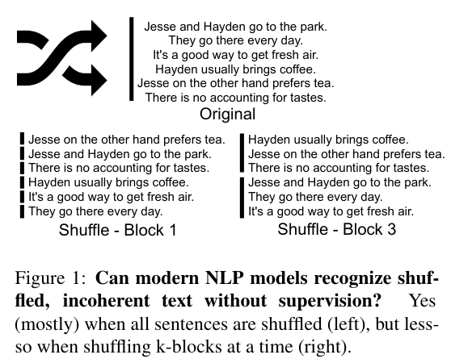

Philippe Laban
Philippe is Research Scientist at Salesforce Research, New York. Previously he was a Ph.D. Candidate in Computer Science at UC Berkeley, advised by
Marti Hearst and John Canny.Philippe's thesis work revolved around applying the latest NLP technology to the news domain, thinking of what news interfaces could look like in the not so distant future.
Philippe also works in text Summarization and Simplification, building methods for unsupervised text generation: designing methods (such as the Summary Loop and Keep it Simple) that can compete with supervised method, without relying on the existence of a dataset.
An area of excitement for Philippe is thinking about ways to evaluate NLP and NLG systems, particularly thinking of task-oriented human evaluation that put NLP systems in practical settings and measure value added by a system.
Publications
Designing and Evaluating Interfaces that Highlight News Coverage Diversity Using Discord Questions
CHI 2023
Near-Negative Distinction: Giving a Second Life to Human Evaluation Datasets
EMNLP 2022 (long paper)
Discord Questions: A Computational Approach To Diversity Analysis in News Coverage
EMNLP 2022 (Findings, long paper)
Quiz Design Task: Helping Teachers Create Quizzes with Automated Question Generation
NAACL 2022 Special HCI Theme (Findings, short paper)
MixQG: Neural Question Generation with Mixed Answer Types
NAACL 2022 (Findings, short paper)
NewsPod: Automatic and Interactive News Podcasts
Intelligent User Interfaces (IUI), 2022

SummaC: Re-Visiting NLI-based Models for Inconsistency Detection in Summarization
Transactions of Association for Computational Linguistics (TACL), 2022
Keep It Simple: Unsupervised Simplification of Multi-Paragraph Text
Association for Computational Linguistics (ACL), 2021 - Long Paper

Can Transformer Models Measure Coherence In Text? Re-Thinking the Shuffle Test
Association for Computational Linguistics (ACL), 2021 - Short Paper
News Headline Grouping As A Challenging NLU Task
North American Chapter of the Association for Computational Linguistics (NAACL), 2021
The Summary Loop: Learning to Write Abstractive Summaries Without Examples
Association for Computational Linguistics (ACL), 2020
What's The Latest? A Question-driven News Chatbot
System Demonstration at ACL, 2020
A framework for a text-centric user interface for navigating complex news stories
Computation + Journalism, 2019
newsLens: building and visualizing long-ranging news stories
Workshop on Events and Stories in the News, ACL, 2017
Teaching / Mentoring
In Berkeley, I was a TA/GSI for:
I have also mentored 10+ undegraduate students in their first steps doing research. If you are an undergraduate student interested in research at the intersection of NLP and News, feel free to contact me.
-
EE120 — Signals and Systems — Spring 2018,
CS182/282 — Introduction to Deep Learning — Spring 2019 & 2020.
I have also mentored 10+ undegraduate students in their first steps doing research. If you are an undergraduate student interested in research at the intersection of NLP and News, feel free to contact me.
Other Work
From Brooklyn Barbers To Movie Stars: Using Introductions To Construct Embeddings Of People
Unpublished, 2018